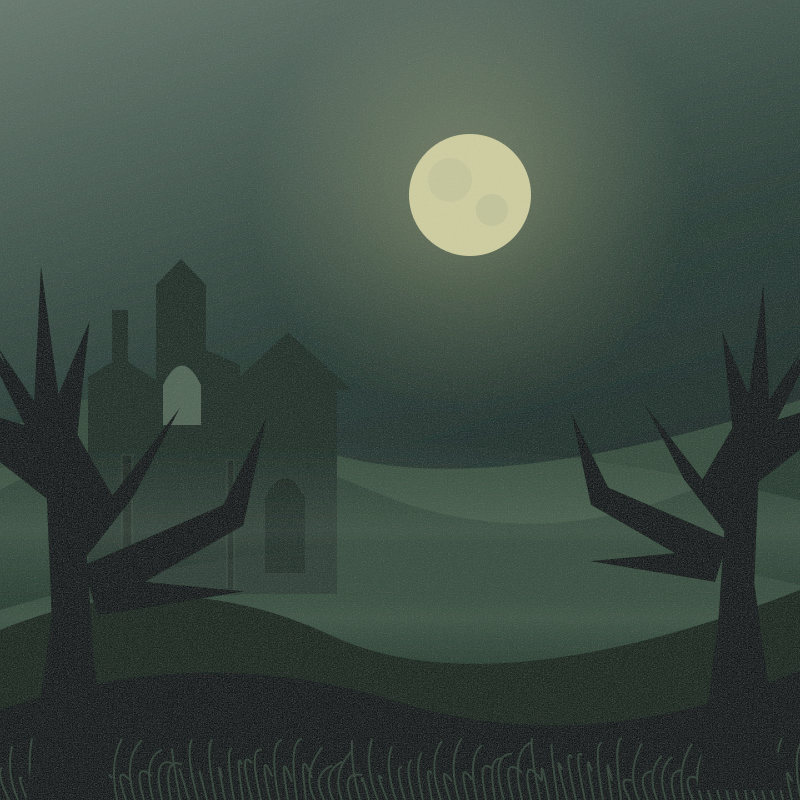

THE QUESTION

Seconds per screen. Changes restart the current screen’s countdown.
5–120 seconds · Saved on this browser when available.
Five hundred questions from folklore, cinema, literature and seasonal traditions. Search the references or jump to any tale.
All illustrations are original SVG artwork created for The Midnight Cabinet and bundled with the app. No external images, fonts, audio, or tracking. Facts checked October 24, 2026.
Space / K: play or pause · ← / →: previous or next · F: fullscreen · T: timing · I: archives · Escape: close panel.